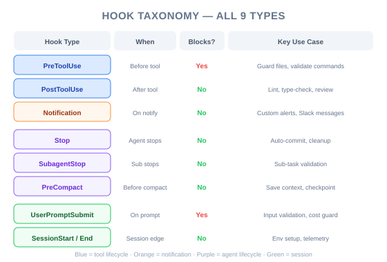
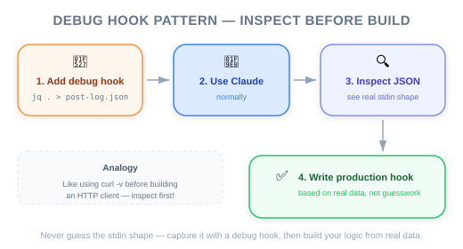

| Item | Detail |
|---|---|
| Exam Domain | D3 — Claude Code Configuration & Workflows (20%), D1 — Agentic Architecture (27%) |
| Task Statements | 1.5 (Agent SDK hooks for tool call interception), 3.2 (custom commands & hooks), 1.7 (session state & resumption) |
| Source | claude-code-in-action / 05-hooks / Lesson 19 (text-only) |
Beyond PreToolUse and PostToolUse, Claude Code offers 7 additional hook types (Notification, Stop, SubagentStop, PreCompact, UserPromptSubmit, SessionStart, SessionEnd) — and the stdin input structure varies by both hook type and tool matcher, making a jq . > log.json debug hook essential for development.

Most of this course focused on PreToolUse and PostToolUse. This lesson reveals the full picture:
| Hook Type | When It Fires | Can Block? | Key Use Cases |
|---|---|---|---|
PreToolUse |
Before a tool executes | Yes | Access control, policy enforcement, prerequisite checks |
PostToolUse |
After a tool executes | No (feedback only) | Type checking, linting, duplication review |
Notification |
When Claude sends a notification (permission needed or 60s idle) | No | Custom alerting, Slack/email notifications |
Stop |
When Claude finishes responding | No | Session logging, summary generation, cleanup |
SubagentStop |
When a subagent (displayed as "Task" in UI) finishes | No | Subagent output validation, aggregation |
PreCompact |
Before a compact operation (manual or automatic) | No | Context preservation, fact extraction before compaction |
UserPromptSubmit |
When user submits a prompt, before Claude processes it | Yes | Input validation, prompt preprocessing, logging |
SessionStart |
When starting or resuming a session | No | Environment setup, context loading |
SessionEnd |
When a session ends | No | Cleanup, session logging, state persistence |
💡 Engineering analogy
If you think of Claude Code as an iOS app:
-PreToolUse/PostToolUse=URLProtocolinterceptors (per-request middleware)
-SessionStart/SessionEnd=applicationDidFinishLaunching/applicationWillTerminate
-Notification=UNUserNotificationCenterdelegate
-Stop= completion handler on anOperation
-PreCompact=didReceiveMemoryWarning(about to trim context)
-UserPromptSubmit=textFieldShouldReturn(intercept before processing)
Each hook type receives different stdin JSON structures. And for PreToolUse/PostToolUse, the tool_input field varies based on which tool was called.
{
"session_id": "9ecf22fa-edf8-4332-ae85-b6d5456eda64",
"transcript_path": "<path_to_transcript>",
"hook_event_name": "PostToolUse",
"tool_name": "TodoWrite",
"tool_input": {
"todos": [{ "content": "write a readme", "status": "pending", "priority": "medium", "id": "1" }]
},
"tool_response": {
"oldTodos": [],
"newTodos": [{ "content": "write a readme", "status": "pending", "priority": "medium", "id": "1" }]
}
}
Key fields for PostToolUse:
- tool_name — which tool was used
- tool_input — what Claude sent TO the tool (varies per tool)
- tool_response — what the tool returned (varies per tool)
{
"session_id": "af9f50b6-f042-4773-b3e2-c3a4814765ce",
"transcript_path": "<path_to_transcript>",
"hook_event_name": "Stop",
"stop_hook_active": false
}
Notice: No tool_name, no tool_input, no tool_response. Completely different structure.
⚠️ This is the #1 pitfall when writing hooks
You cannot assume the stdin structure. A hook script that works for PostToolUse on
Writewill crash if it receives PostToolUse onTodoWritebecause thetool_inputfields are completely different. Always validate the structure before accessing nested fields.

The lesson's most practical tip is a universal debug hook that logs stdin to a file:
"PostToolUse": [
{
"matcher": "*",
"hooks": [
{
"type": "command",
"command": "jq . > post-log.json"
}
]
}
]
What this does:
1. The * matcher catches all tool uses
2. jq . pretty-prints the JSON stdin
3. Output is written to post-log.json
4. You can inspect exactly what data your hook will receive
💡 Development workflow
- Add the debug hook with
matcher: "*"- Use Claude Code normally — trigger the tools you want to hook
- Inspect
post-log.jsonto see the exact stdin structure- Write your actual hook script based on the real data
- Replace the debug hook with your production hook
This is the same pattern as using
curl -vto inspect HTTP responses before writing API client code.
This works for any hook type — just change the key:
"Stop": [
{
"matcher": "*",
"hooks": [
{
"type": "command",
"command": "jq . > stop-log.json"
}
]
}
]
| Field | PreToolUse | PostToolUse | Stop | Notification | SubagentStop |
|---|---|---|---|---|---|
session_id |
Yes | Yes | Yes | Yes | Yes |
transcript_path |
Yes | Yes | Yes | Yes | Yes |
hook_event_name |
Yes | Yes | Yes | Yes | Yes |
tool_name |
Yes | Yes | No | No | No |
tool_input |
Yes | Yes | No | No | No |
tool_response |
No | Yes | No | No | No |
stop_hook_active |
No | No | Yes | No | No |
💡 Exam tip
The
transcript_pathfield is available in ALL hook types. This means any hook can access the full conversation transcript — useful for logging, auditing, and context extraction.
| Hook | Use Case | Example |
|---|---|---|
Stop |
Session summary logging | Write a summary of what Claude did to a log file |
SubagentStop |
Validate subagent output | Check if research subagent returned structured data |
PreCompact |
Preserve critical facts | Extract key decisions before context is trimmed |
UserPromptSubmit |
Input preprocessing | Validate prompts against a template before Claude sees them |
SessionStart |
Environment bootstrap | Load project-specific context or verify prerequisites |
SessionEnd |
Cleanup | Remove temporary files, update session log |
Notification |
Custom alerts | Send Slack notification when Claude needs permission |
| ❌ Wrong Approach | ✅ Correct Approach | Why |
|---|---|---|
| Assume all hooks receive the same stdin structure | Use jq . > log.json to discover the structure first |
stdin varies by hook type AND by tool matcher |
Hard-code tool_input field access without validation |
Check tool_name first, then access tool-specific fields |
Different tools have different tool_input shapes |
Use matcher: "*" in production for heavyweight hooks |
Scope matchers to specific tools | * catches everything — performance and cost impact |
| Write hook scripts without testing stdin first | Use debug hook → inspect → write production hook | Saves debugging time and prevents runtime errors |
Ignore transcript_path in hooks |
Use it for context-aware hook logic | Transcript provides full conversation history for hooks that need it |
🎯 Exam scenarios where these concepts appear
- S2 (Code Generation):
Stophook for session logging in CI pipelines- S4 (Developer Productivity):
SessionStartfor environment setup,PreCompactfor context preservation- S5 (CI/CD): Understanding hook types for pipeline orchestration
Common exam pattern: "You need to perform an action when Claude finishes responding. Which hook type should you use?"
Answer direction:Stophook — it fires when Claude finishes responding, regardless of which tool was last used.
Your CI pipeline uses Claude Code to review PRs. You need to write a summary of Claude's review findings to a log file after Claude finishes responding. Which hook configuration is correct?
* that writes to a log fileYou are writing a PostToolUse hook that should only process file edits but it keeps crashing when Claude uses other tools like Bash or Read. What is the most likely cause and fix?
* to Write|Edit|MultiEdittool_input always has a file_path field, but different tools have different tool_input structurestool_input — use PreToolUse insteadYou need to validate that a subagent (displayed as "Task" in the UI) returns properly structured JSON data before the coordinator processes it. Which hook type should you use?